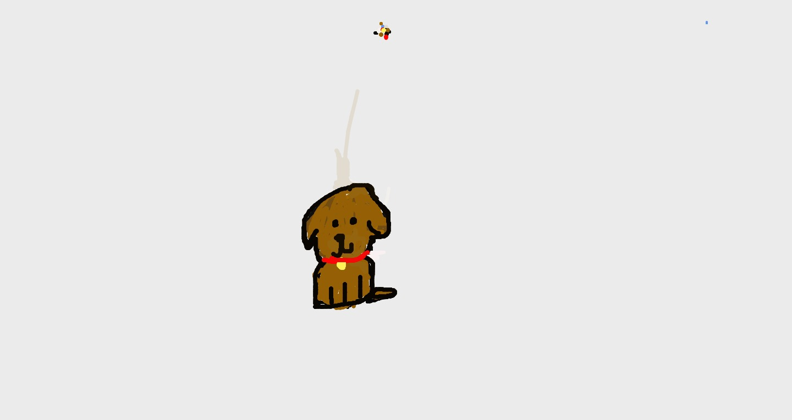
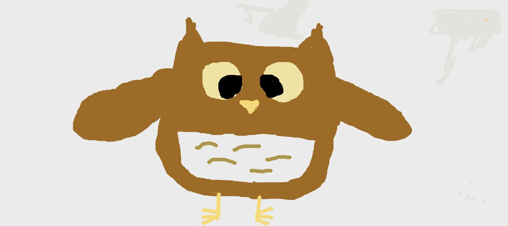
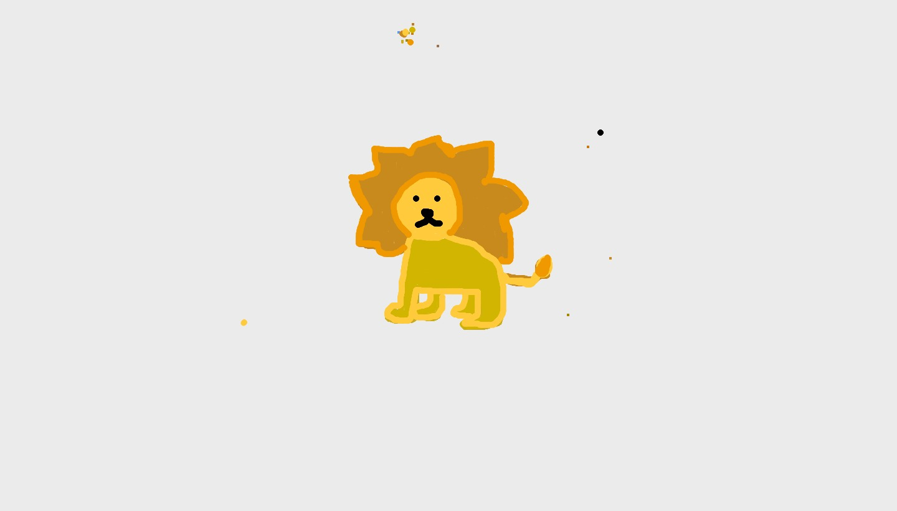

Magdalena, 9. Puso un perro, "porque me gusta y porque tengo perros, entonces por eso yo creo que me gustan más. Y por que son tiernos tambien".

Montserrat, 10. Dibujo un búho,me dijo "Desde chica me han gustado mucho los Búhos pq son inteligentes. Me gustan desde que los vi en el zoológico una vez, me gustaron tanto que me compraron un peluche con el que dormía".

Maria Trinidad, 12. "Dibuje un león, claramente no por que era lo más fácil...Ay nose, son bacanes y lo dibuje nomas. Por que soy leo".